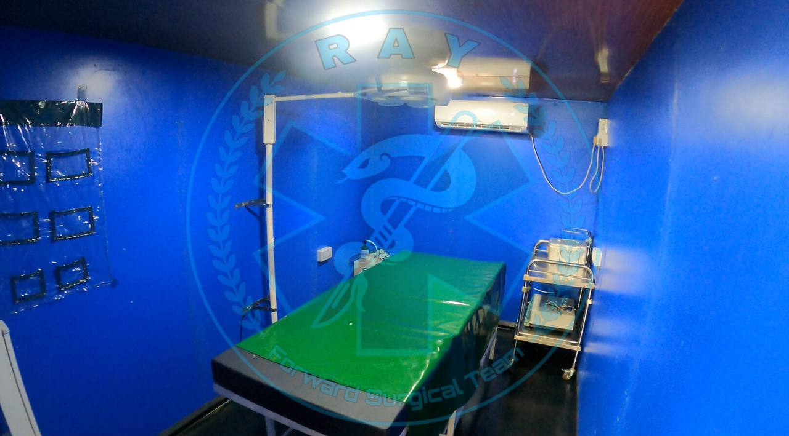
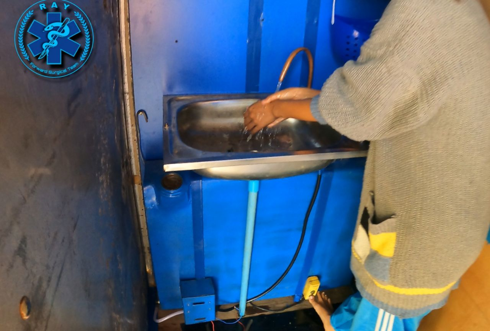

ကားဖြင့်ပြုလုပ်သောရွေ့လျားခွဲခန်းအတွင်းဘက်မြင်ကွင်း

ကားဖြင့်ပြုလုပ်သောရွေ့လျားခွဲခန်း အပြင်ရှိ အဝတ်လဲခန်းနှင့် လက်ဆေးဘေစင်

Mobile car-type operation theatre
ခွဲစိတ်ကုသနိုင် တဲ့ ခွဲခန်းနေရာဌာနတွေကိုလေယာဥ်၊လက်နက်ကြီး စသည်တိုဖြင့် ခနခန အတိုက်ခိုက်ခံရပြီးနောက်မှာ ဆေးပစ္စည်းများ၊ ဆေးခန်းများ ဟာ တစ်နေရာမှ နောက်ထပ် လုံခြုံနိုင်တဲ့နေရာတွေကို ပြောင်းရွေ့ခဲ့ကြရသည် ။ တိုက်ပွဲနှင့် အနီးအနား မှာ ခွဲခန်းတစ်ခုကို လုပ်ဖိုကြိုးစားပေမယ့်လည်း မ ကြာခနဆိုသလိုနေရာပေါက်ပြီး တိုက်ခိုက် ခံလာရတဲ့အခါမှာ ရှေ့တန်း နေရာတွေကို စွန့်ခွာခဲ့ကြရတယ်။
မိုင်းနင်းမိ၍ခြေထောက်ပြတ်သောလူနာအားခွဲစိတ်ပေးနေစဉ်
sub center ဆေးခန်းတွေ၊ နေအိမ်တွေကို ခွဲခန်းအဖြစ်ပြောင်းလဲအသုံးပြုဖိုရာလည်း ရွာသူ၊ ရွာသားတွေရဲ့လုံခြုံရေးကို ငဲ့ကွက်သောရင်း ခွဲခန်းဆောက်ဖိုနေရာရရှိရန် ခက်ခဲလာခဲ့တယ်။ ကျန်းမာရေးဝန်ထမ်းတွေမှာ စိတ်မလုံခြုံမူတွေဖြစ်လာတဲ့အခါ လက်နက်ကြီးကျတဲ့နေရာတွေနဲ့ဝေးတဲ့ နေရာတွေကို ရောက်သွားစေခဲ့တယ်။
ဆေးရုံ၊ ဆေးခန်းတွေကို ပြန်လည် စတင်နိုင်ခဲ့ပေမယ့် ဒဏ်ရာရရှိတဲ့ရဲဘော်တွေကို ပိုဆောင်တဲ့အခါ တိုက်ပွဲဖြစ်ပွားရာနေရာမှ ၁ နာရီ ၂နာရီလောက်သွားရတယ်။တချိုနေရာတွေဆို ၃ ၄နာရီလောက်ထိ သွားရတာမျိူးတွေထိရှိပါတယ်။တိုက်ပွဲကနေ ကယ်ထုတ်တဲ့အချိန်ကလည်း ခန့်မှန်းခြေ ၁နာရီလောက်ကြာမြင့် နိုင်တာကြောင့် အသက်အန္တာရယ် စိုးရိမ်ရတဲ့လူနာတွေဟာ ဆေးရုံ အထိ မရောက်နိုင်ခဲ့ကြဘူး။
ဒဏ်ရာပြင်းထန်တဲ့ရဲဘော်တချိုကတော့ဆေးရုံဆေးခန်းသွားရာ လမ်းပေါ်မှာ သေဆုံးခဲ့ကြတယ်။ ဒါကြောင့်ရွေ့လျားခွဲခန်းနဲ့ ခွဲစိတ်ကုသရေးအဖွဲ ကအချိန်မှီခွဲစိတ်ပြီး အသက်ကယ်နိုင်ဖိုအတွက် တစ်ခုတည်းသော အဖြေဖြစ်လာခဲ့တယ်။
ကျန်းမာရေးကုသပေးတဲ့နေရာဌာနအနီးတဝိုက်ကိုလက်နက်ကြီးလေယာဥ်တိုနဲ့ တိုက်ခိုက်တာမျိုးတွေမကြာခဏကြုံလာကြတဲ့အခါ ဆရာဝန်ဆရာမတွေအနေနဲ့ မကြာခဏ ရွေ့ပြောင်းကြရတယ် ဆေးကုသဖို ခွဲစိတ်ကုသဖိုအခက်အခဲတွေကြုံလာကြရတယ်။ ကျနော်တိုဆေးအဖွဲလေးကတော့ ဒီလိုအခက်အခဲတွေကိုကျော်ဖြတ်ဖိုရာ ကားဖြင့်ပြုလုပ်ထားတဲ့ရွေ့လျားခွဲခန်းတစ်ခုကိုပြုလုပ်ထားပါတယ်။ Rx622 လိုအမည်ပေးထားပါတယ်။မကြာခဏရွေ့ပြောင်းလိုရသလို တိုက်ပွဲဖြစ်ပွါးတဲ့နေရာတွေရဲ့အနီးကိုသွားပြီး ဆေးရုံထိမရောက်နိုင်မယ့်လူနာတွေကို အရေးပေါ်ခွဲစိတ်အသက်ကယ်ဖိုရည်ရွယ်ထားပါတယ်။
ကားဖြင့်ပြုလုပ်သောရွေ့လျားခွဲခန်းအတွင်းဘက်မြင်ကွင်း
ကားဖြင့်ပြုလုပ်သောရွေ့လျားခွဲခန်း အပြင်ရှိ အဝတ်လဲခန်းနှင့် လက်ဆေးဘေစင်
Mobile car-type operation theatre